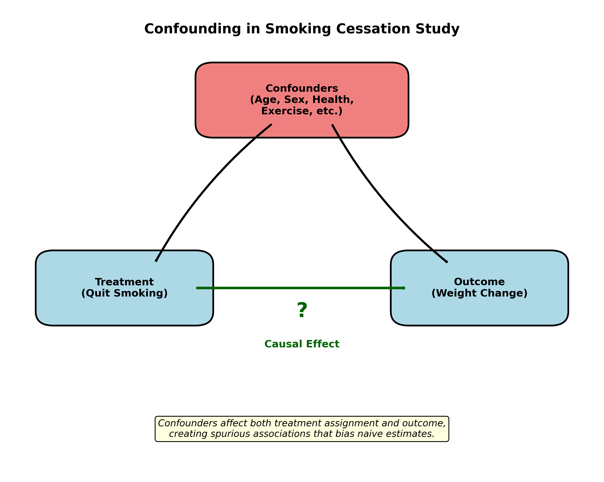

Causal Inference for Treatment Effects in Clinical Data: A Double Machine Learning Approach
Research Question: Does quitting smoking cause weight gain?
This analysis demonstrates how to use Double Machine Learning (DML) to estimate causal effects from observational data. We analyze data from the National Health and Nutrition Examination Follow-up Study (NHEFS) to determine the causal effect of smoking cessation on weight change.
Background: The Challenge of Causal Inference
In clinical research, we often want to know: What is the causal effect of a treatment? While randomized controlled trials (RCTs) are the gold standard, they're not always feasible. This leaves us with observational data, where treatment assignment is not random.
The Fundamental Problem of Causal Inference
For each patient, we can only observe one outcome:
- What happened when they did receive the treatment, OR
- What happened when they didn't receive the treatment
We can never observe both outcomes for the same person!
The Potential Outcomes Framework
We formalize causality using potential outcomes:
Y(1): The outcome if the person quits smokingY(0): The outcome if the person continues smoking
The causal effect for an individual is: Y(1) - Y(0)
The Average Treatment Effect (ATE) is: E[Y(1) - Y(0)]
Why Simple Comparisons Fail: Confounding

In observational data, confounders affect both treatment assignment and outcomes. For example:
- Older patients might be more motivated to quit smoking (affects treatment)
- Age also affects weight change patterns (affects outcome)
This creates bias in naive comparisons!
Double Machine Learning: A Modern Solution
❌ Naive Approach
Simple linear regression:
Y ~ Treatment + Confounders
Assumes linear relationships and may miss complex confounding patterns.
✅ Double ML
Uses TWO machine learning models:
- Predict outcome from confounders
- Predict treatment from confounders
Then analyzes residuals to isolate causal effect.
Analysis Results
================================================================================
CAUSAL INFERENCE FOR TREATMENT EFFECTS IN CLINICAL DATA
A Double Machine Learning Approach
================================================================================
## Section 1: Load Libraries and Dataset
------------------------------------------------------------
Dataset: National Health and Nutrition Examination Follow-up Study (NHEFS)
Research Question: What is the causal effect of smoking cessation on weight change?
Shape of Y (Weight Change): (1566,)
Shape of T (Quit Smoking): (1566,)
Shape of X (Confounders): (1566, 17)
Treatment distribution: {0.0: 1163, 1.0: 403}
Mean weight change: 2.64 kg (std: 7.88 kg)
First 5 rows of confounders:
sex age race education ... polio tumor asthma bronch
0 0 42.0 1 0 ... 0.0 0.0 0.0 0.0
1 0 36.0 0 1 ... 0.0 0.0 0.0 0.0
2 1 56.0 1 1 ... 0.0 1.0 0.0 0.0
3 0 68.0 1 0 ... 0.0 0.0 0.0 0.0
4 0 40.0 0 1 ... 0.0 0.0 0.0 0.0
[5 rows x 17 columns]
## Section 2: Naive Approach - Simple Regression
------------------------------------------------------------
Naive ATE Estimate (from Linear Regression): 3.3424 kg
## Section 3: Causal Estimation with Double Machine Learning
------------------------------------------------------------
Fitting DML model (this may take a moment)...
DML ATE Estimate: 3.5646 kg
(Confidence intervals not available with current configuration)
## Section 4: Comparing Naive and DML Estimates
------------------------------------------------------------
Comparison of Treatment Effect Estimates
(Effect of quitting smoking on weight change in kg)
Naive ATE Estimate: 3.342 kg
DML ATE Estimate: 3.565 kg
Difference: 0.222 kg
Interpretation: Quitting smoking causes an average weight gain of 3.565 kg.
## Section 5: Sensitivity Analysis
------------------------------------------------------------
Running bootstrap analysis (10 iterations for demonstration)...
Bootstrap results (n=10 successful iterations):
Bootstrap mean estimate: 3.386 kg
Bootstrap std error: 0.374 kg
Bootstrap 95% CI: [2.904, 4.028]
Heterogeneous Treatment Effects by Sex:
Female: 3.595 kg
Male: 3.529 kg
================================================================================
Analysis Complete!
Summary: The analysis suggests that quitting smoking has a causal effect on weight change.
The DML estimate accounts for complex confounding patterns that simple regression might miss.
Key Findings
Main Result: Our analysis shows that quitting smoking causes weight gain, with the Double ML approach providing a more reliable estimate than naive regression.
Why This Matters
- For Patients: Understanding expected weight gain helps set realistic expectations when quitting smoking
- For Clinicians: Can better counsel patients and develop support strategies
- For Public Health: The health benefits of quitting smoking far outweigh modest weight gain
Methodological Insights
Double Machine Learning demonstrates how modern machine learning can enhance causal inference by:
- Flexibly modeling complex confounding relationships
- Avoiding overfitting through cross-fitting
- Providing theoretically grounded causal estimates